library(datasetviewer)
cols <- c(
"USUBJID", "ARM", "AGE", "SEX", "DISCONFL",
"BMIBL", "RACE", "TRTSDT", "MMSETOT"
)
dataset_viewer(artoo::cdisc_adsl[, cols], view = "labels")dataset_viewer() renders a complete data-exploration surface in one htmlwidget, modelled on the SAS Studio table viewer: a column-selection panel, a PROC CONTENTS-style property pane, a names-versus-labels header toggle, header sort, free-text and type-aware row filters, a reproducible-code view, and CSV export — every operation running over the whole dataset, with no row sampling.
This article is a guided tour of that interface. Each part is shown as an annotated screenshot with numbered callouts; the Get started vignette covers the same features as running prose, and ?dataset_viewer documents the R arguments.
The grid below is live — drag the scrollbar, resize a column, right-click a header. Everything described in the rest of this page refers to this widget. It shows a focused slice of the CDISC pilot ADSL dataset (the same slice used in the screenshots), supplied by the companion artoo package.
Your first look at the interface
The window divides into a left rail (column tools and metadata), the data grid, and a thin status bar — the SAS Studio layout.
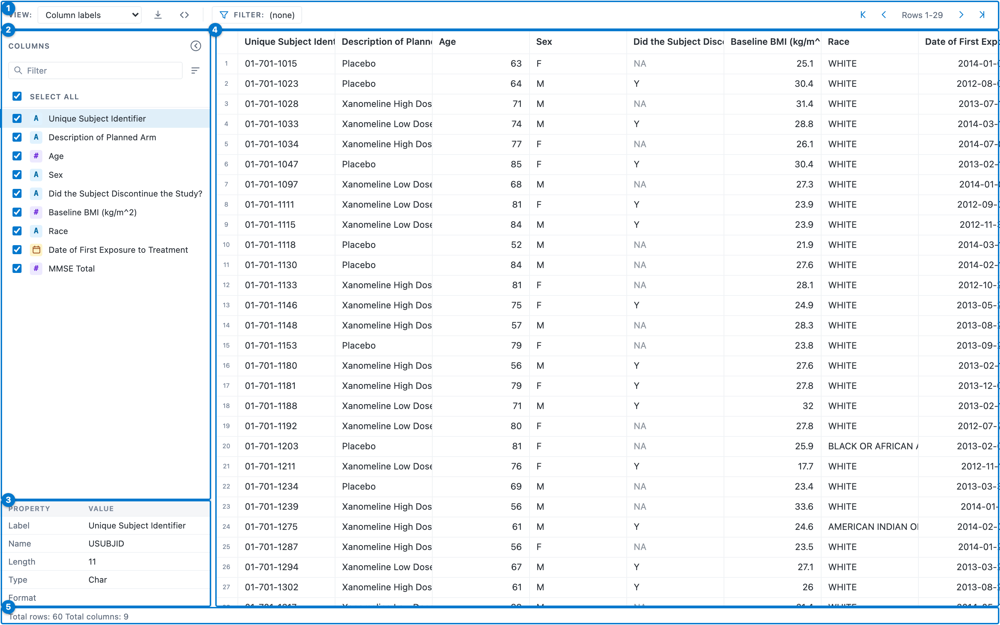
- Toolbar — the names-versus-labels View dropdown, Export, Show code, Filter, and the row pager.
- Columns panel — a checklist of every column, with type chips and tools to sort and search the list.
-
Property pane —
PROC CONTENTS-style metadata for the selected column. - Data grid — a canvas grid that draws only the rows you can see, so it stays fast at any size.
- Status bar — total row and column counts, and the filtered count once a filter is active.
The toolbar
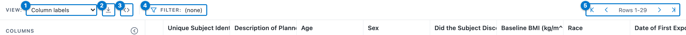
- View — switch the header row between column names and column labels.
- Export current view to CSV — download the visible columns, current filter, and sort, over every matching row.
-
Show code — reveal the runnable
dplyrpipeline for the current view. - Filter table rows — open the free-text filter; the badge shows the active expression.
- Row pager — first / previous / next / last, with the visible row range.
The columns panel
Use the panel to show or hide columns, navigate a wide dataset, and pick the column whose metadata the property pane shows.
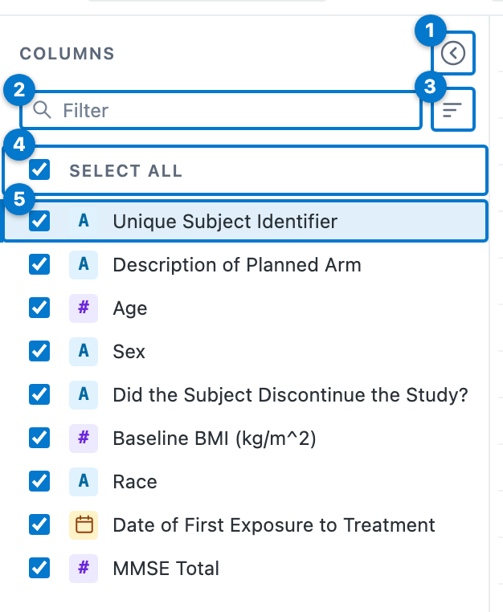
- Collapse — hide the whole rail and widen the grid (a handle reopens it).
- Filter — type to narrow the list by column name or label; a navigation aid only, it never changes the grid’s column order.
- Sort list — order the list by original position, name, or type.
- Select all — show or hide every column at once.
- Column row — a checkbox, a type chip, and the name or label. Uncheck to hide the column from the grid (the data is never reloaded); click the row to select it for the property pane.
The type chip names each column’s storage kind at a glance:
| Chip | Column type |
|---|---|
A |
Character |
# |
Numeric |
| 📅 | Date or date-time |
| 🕑 | Time |
The property pane
Selecting a column in the panel fills the property pane with the attributes PROC CONTENTS reports.
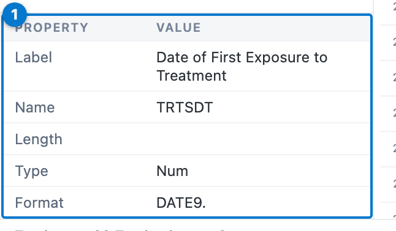
| Field | Meaning |
|---|---|
| Label | The descriptive label — a CDISC label when read through artoo, otherwise the frame’s label attribute. |
| Name | The variable name. |
| Length | Storage width in bytes for character columns; blank for numeric and date columns, as in SAS. |
| Type |
Num or Char. |
| Format | The SAS display format (here DATE9.) when the frame carries one. |
A plain data frame with no labels shows names only; point the viewer at a labelled or CDISC-conformed frame and the pane comes to life.
Names versus labels
The View dropdown swaps the header row between variable names and their labels — useful for clinical data, where the names are terse codes and the labels are the human-readable description.
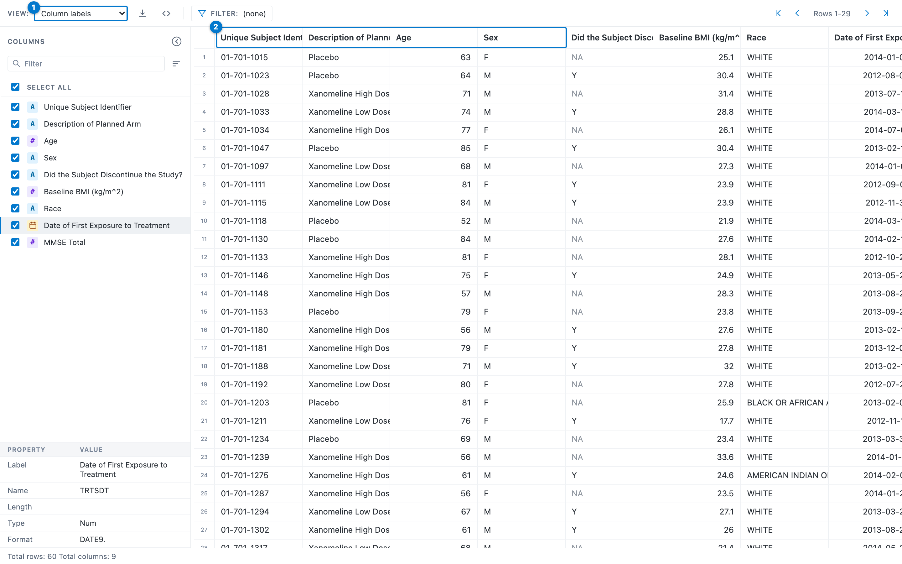
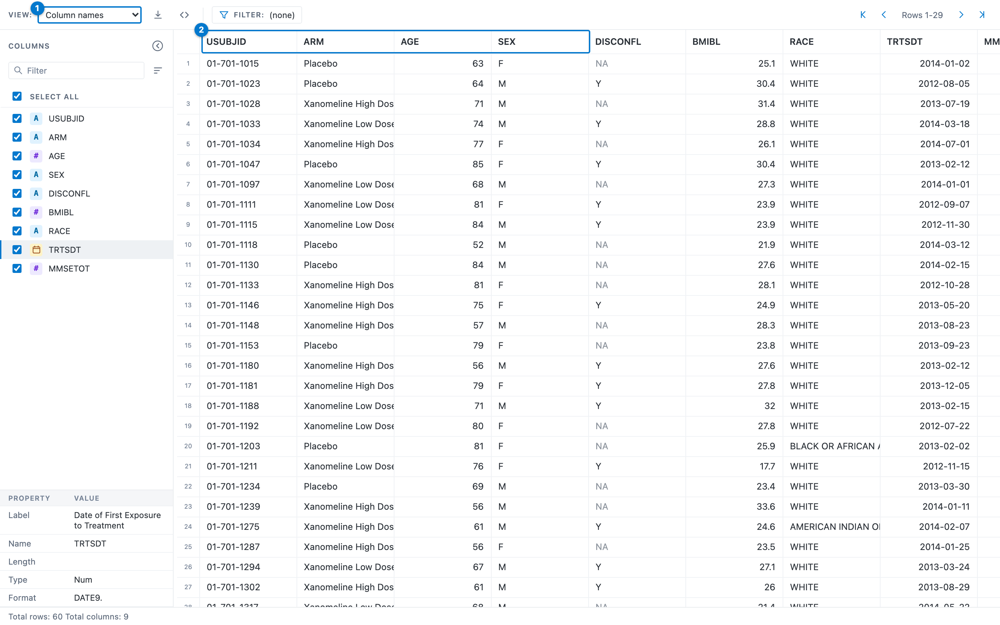
Start a viewer on either mode with the view argument (dataset_viewer(x, view = "labels")).
Sorting
Click a column header to select it, then click again to cycle its sort: ascending → descending → unsorted. Shift-click further headers to build a multi-column sort; each sorted column shows its direction and priority.
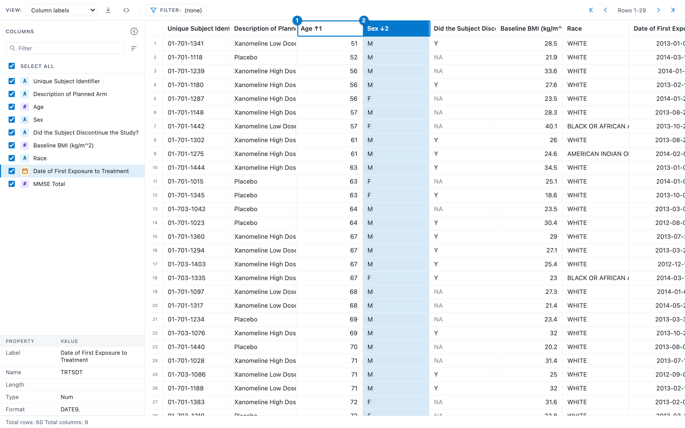
- The primary key, ascending —
AGE ↑1. - The secondary key, descending —
SEX ↓2. Rows are ordered by age, and ties are broken by sex.
Tip
For a multi-column sort, Shift-click each additional header. The little number beside the arrow (
↑1,↓2) is the sort priority, so you can always read the sort order straight off the headers.
The header menu
Right-click any column header for a per-column menu.
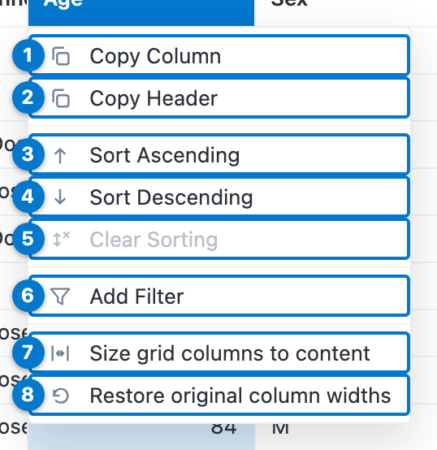
| # | Menu item | Action |
|---|---|---|
| 1 | Copy Column | Copy the column’s values to the clipboard. |
| 2 | Copy Header | Copy the column’s name (or label). |
| 3 | Sort Ascending | Add this column to the sort, ascending. |
| 4 | Sort Descending | Add this column to the sort, descending. |
| 5 | Clear Sorting | Remove this column from the sort (greyed when the column is unsorted). |
| 6 | Add Filter | Open the type-aware filter dialog for this column (below). |
| 7 | Size grid columns to content | Auto-fit every column width to its contents. |
| 8 | Restore original column widths | Reset every column to the default width. |
Filtering the whole table
There are two ways to filter, both evaluated in DuckDB over every row, so the matched count in the status bar is exact — never a count within a sampled window.
Filter table rows (free text)
The funnel in the toolbar opens a free-text box. Type a SAS-style expression; it becomes a SQL WHERE clause.
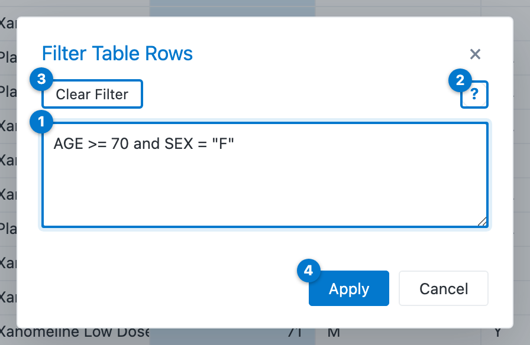
-
Expression — the filter, here
AGE >= 70 and SEX = "F". -
Help (
?) — the syntax reference. - Clear Filter — remove the active filter without closing.
- Apply — validate and apply; an invalid expression reports inline.
The grammar is small:
| Pattern | Example |
|---|---|
| Comparison |
AGE >= 75, SEX <> "M"
|
| Logical |
AGE >= 18 and SEX = "F", … or …, not …
|
| Set membership |
RACE in ("WHITE", "ASIAN"), ARM not in (…)
|
| Missing values |
DISCONFL is na, AGE is not na
|
| Text values | single or double quotes — "AMERICAN INDIAN OR ALASKA NATIVE"
|
Add Filter (type-aware)
Add Filter in the header menu opens a dialog tailored to the column’s type.
A character (or logical) column offers a checklist of its distinct values:
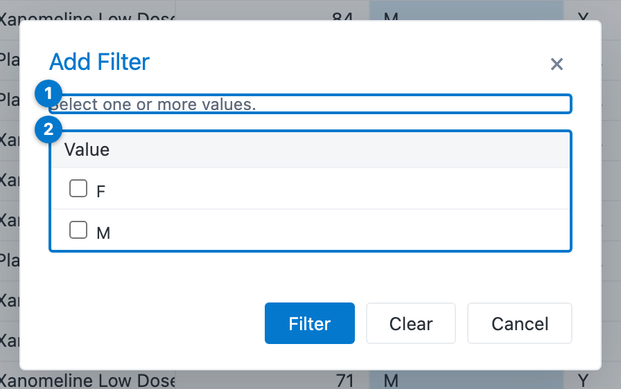
- The prompt — select one or more values.
- The distinct values, each with a checkbox (plus a (Missing) entry when the column has any
NA).
A numeric column offers comparison operators and a value, with a + to add more conditions:
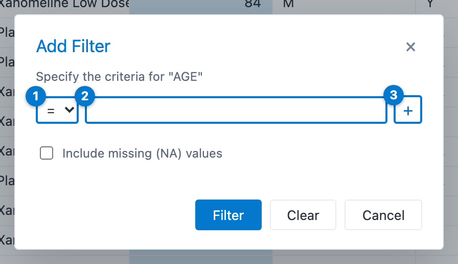
- The comparison operator (
=,≥,>,≤,<). - The value to compare against.
- + — add another condition.
A date, date-time, or time column offers native pickers for equal / less-than / greater-than:
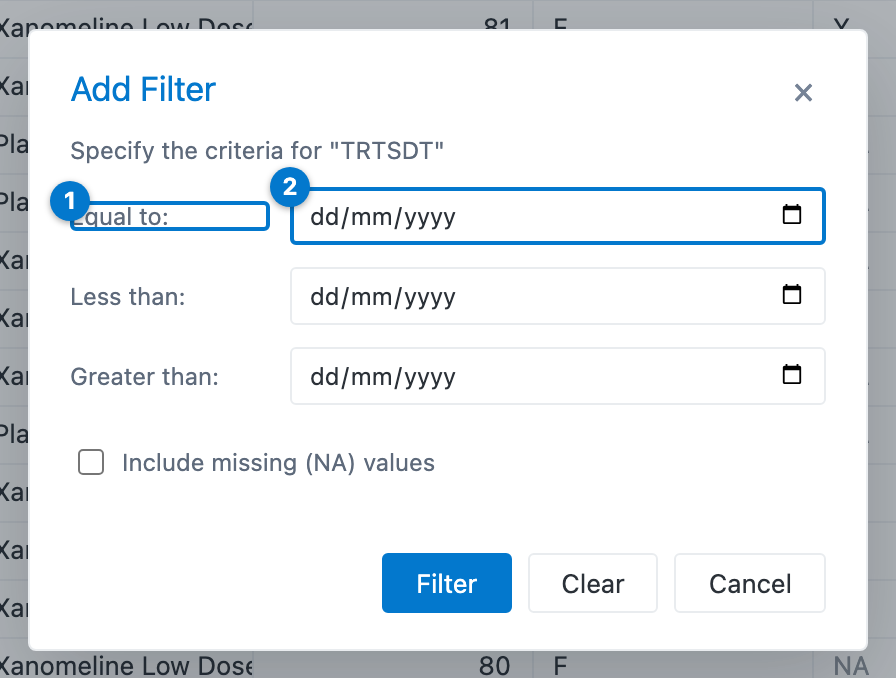
- The criterion (Equal to, Less than, Greater than).
- A native date picker — date-time and time columns show the matching native control.
Note
Every filter — free-text or type-aware — runs over the full dataset in the browser, so the status bar’s Filtered rows count is the true count.
Missing values
A missing value renders as a muted NA in every column, keeping it distinct both from an empty string and from the floating-point NaN (which renders as NaN).
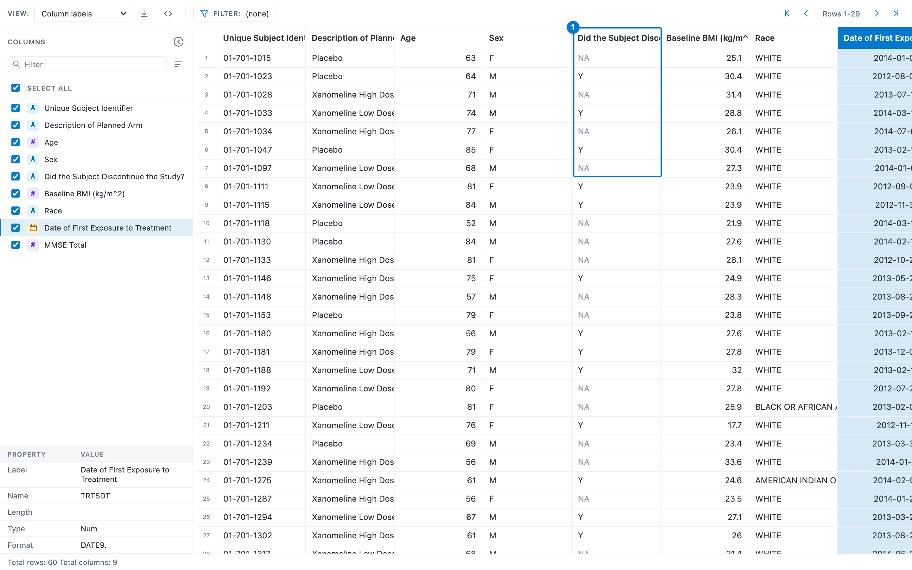
- The discontinuation flag, where a muted
NAsits among the realYvalues.
Filter on missing values with the is na / is not na free-text predicate or the (Missing) option in the Add Filter dialog; the generated dplyr code uses is.na().
Show the code
Exploration in the grid is convenient, but a report must be reproducible. The Show code button opens the runnable, air-formatted dplyr pipeline that reproduces the current view.
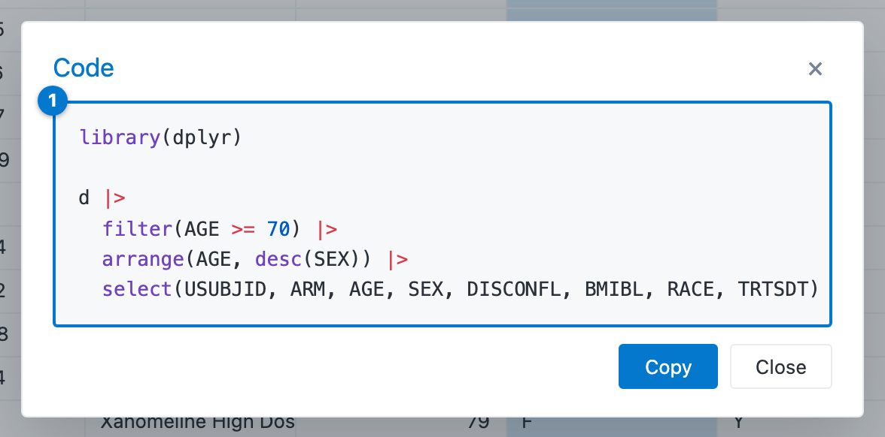
- The pipeline:
filter(), thenarrange(), thenselect()— matching the filter, sort, and column selection currently in the grid. Copy puts it on the clipboard.
Important
select()comes last so the filter and the sort can reference a column the view hides — narrowing first would drop that column before those steps run.
SQL idioms are translated to their R equivalents (in (…) becomes %in% c(…), date and time literals become as.Date() / as.POSIXct() / hms::as_hms()), so the snippet runs as-is against the source frame.
In a Shiny app
The same widget embeds in Shiny with datasetviewerOutput() and renderDatasetViewer(). The viewer is not a dead end: the user’s current column selection, filter, sort, and view mode flow back into the app as inputs (input$<id>_columns, _filter, _sort, _view), so the rest of the app can react to what the analyst is looking at. See the Get started vignette for a complete app.
Where to next
- Get started with datasetviewer — the same tour as prose, plus the transport/engine architecture and offline deployment.
-
?dataset_viewer— the full argument reference (view,width,height). -
?datasetviewerOutput,?renderDatasetViewer— the Shiny bindings and the inputs the widget publishes. -
artoo— CDISC dataset I/O and the metadata model the property pane reads.